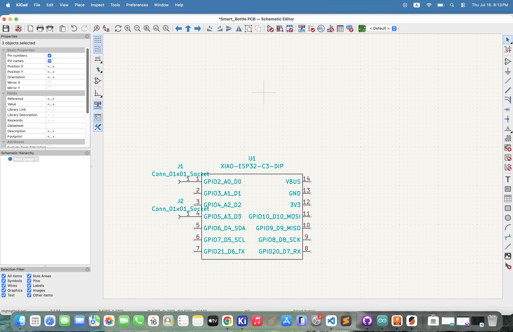
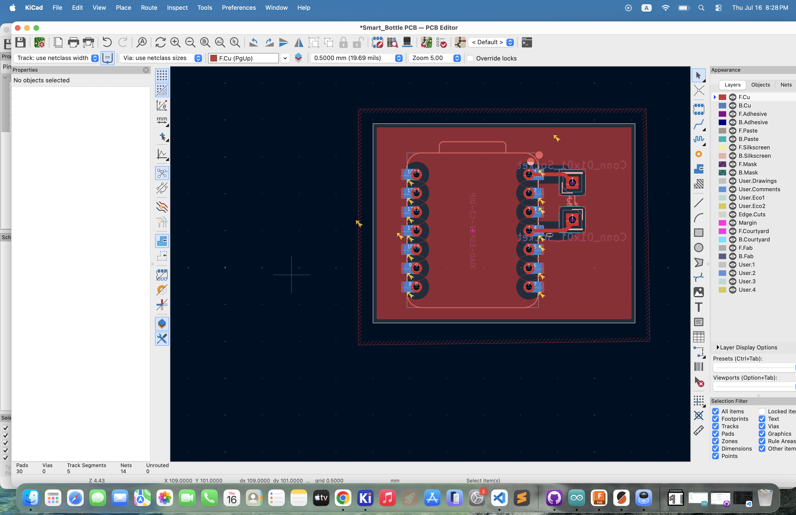

Design and fabricate something using one of the CNC machines in the lab. Make sure to include some kind of post processing in your design.
As this week's assignment included to both fabricate something using CNC machines and also create an MVP (Most Viable Product) I decided to kill two birds with one stone creating a custom PCB that filled my CNC assignment and is also useful for my MVP. I attended Victor's optional lab section where he taught us how to design and mill PCBs which is how I learned to do both. I will be using KI-Cad to design my PCB.

The schematic for pcb is very simple, I just have to find two connection points to my microcontroller than can be used to read the capacitance from a water bottle.

Link to slides: https://docs.google.com/presentation/d/1nJxkHjFghOLMLG9y3Jg8hHeLzAsGRRuC-UVfzDiuMeY/edit?slide=id.g3976f340c46_0_1#slide=id.g3976f340c46_0_1
Using Ki-Cad I was able to render the schematic into an actual PCB, I followed the guide Victor gave us to create the PCB, I posted the link to the slides above.